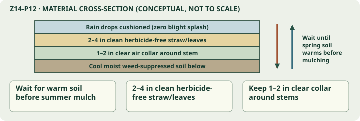

Z14-P12 · Food production and preservation · New manuscript
Mulch garden beds to stabilize soil moisture and block soil-splash blights
Cut weeding and watering labor sharply while shielding lower tomato and squash leaves from soil-borne fungal spores.
When it applies · Established vegetable beds once soil has warmed appropriately in late spring/summer.
Equipment · Clean weed-free straw (not seedy hay), shredded dry autumn leaves, or clean untreated grass clippings (zero herbicide residue).

Actions
- Apply a 2-to-4-inch layer of clean organic mulch around established plants ONLY AFTER spring soil has warmed fully for warm-season crops (mulching cold May soil traps chill and stalls tomatoes/squash).[P03, P01]
- Pull mulch 1 to 2 inches back from direct plant stems to prevent stem rot and vole/slug chewing, and verify any straw, compost, or grass clippings are completely free of persistent broadleaf lawn herbicides (which distort and kill tomatoes and beans for years).[P03]
- Appreciate mulch's food-safety and disease bonus: clean straw cushions heavy raindrops so dirt-borne blight spores and soil bacteria cannot splash up onto lower leaves and ripening fruit.[P03, P16]
Failure recognition · Mulching tomato beds with fresh grass clippings from a neighbor's herbicide-treated lawn, curling and killing the entire crop.[P03]
Verify · Confirm soil warmed before mulching, herbicide-free clean straw/leaves used, and stems kept clear with 1–2 inch air collar.[P03]
Stop or change course · Dense wet mulch harboring heavy slugs or vole tunneling requires raking back temporarily to dry the soil surface.[P03]
Evidence and editorial notes
- P01 · University of Minnesota Extension · Planting the Vegetable Garden (current web edition)
- Section: Site Selection, Sunlight, Frost Dates, and Short-Season Planning · Conditions: Home vegetable gardening in Upper Midwest / Minnesota (USDA Zones 3–5)
Support: Select a sunny well-drained garden site receiving 6–8+ hours of direct sunlight, match crop days-to-maturity to local last-spring and first-autumn frost dates, and separate cool-season crops from frost-sensitive warm-season crops.
Limitations: Microclimates, low frost pockets, and soil clay/sand composition shift local planting windows by weeks. · Conflicting evidence: None; anchors regional Minnesota growing-season realism.
Editorial note: Grounds Z14 regional food production and frost-window planning. · Specialist reviewer: Horticulture and university Extension specialist
Primary source · checked 2026-11-24 - P03 · University of Minnesota Extension · Planting the Vegetable Garden (current web edition)
- Section: Watering, Mulching, Crop Rotation, and Integrated Pest Management · Conditions: Home vegetable plots across seasonal dry/wet swings
Support: Water deeply at the soil base rather than overhead foliage to conserve moisture and curb fungal disease, mulch soil to stabilize temperature and weeds, rotate plant families across seasons, and identify pests before choosing least-toxic controls.
Limitations: Untreated rainwater or suspect surface water should not be splashed onto ready-to-eat leafy crops immediately before harvest. · Conflicting evidence: None; aligns with FSG-4 clean produce handling.
Editorial note: Grounds resilient low-input gardening and biological pest management. · Specialist reviewer: Extension horticulture and integrated pest management
Primary source · checked 2026-11-24 - P16 · USDA / FDA / CDC · Four Steps to Food Safety (current web edition)
- Section: Clean, Separate, Cook, Chill > Produce Washing and Cross-Contamination · Conditions: Garden-to-kitchen harvesting, food prep, and preservation workspaces
Support: Wash hands 20 seconds with soap and safe water, scrub firm produce under running safe water before peeling/cutting, keep raw animal foods strictly separate from ready-to-eat produce, and sanitize prep surfaces and utensils between tasks.
Limitations: Washing produce with soap, detergent, or bleach is unsafe and not recommended. · Conflicting evidence: None; extends F01–F03 into garden harvest and home preservation.
Editorial note: Anchors kitchen sanitation and cross-contamination barriers in Z14. · Specialist reviewer: Food safety and public health
Primary source · checked 2026-11-24
Source lineage · UMN Extension Vegetable Crop Management; new manuscript · Classification · New manuscript.